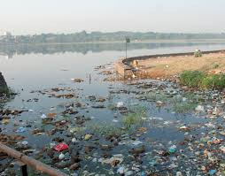
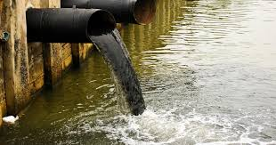

Marathi
जलप्रदूषण म्हणजे औद्योगिक विसर्जन, शेतीतून वाहून जाणारे पाणी, सांडपाणी, तेल गळती आणि खणकाम यामुळे होणारे जलस्रोतांचे प्रदूषण. यामुळे रासायनिक, जैविक, थर्मल आणि पोषक प्रदूषण होते, ज्यामुळे पर्यावरण आणि मानवी आरोग्यास हानी पोहोचते.
प्रभाव:
- आरोग्य जोखीम: कॉलरा, टायफॉइड, नाड डिसेंट्री यासारखे जलजन्य रोग.
- परिसंस्थेचे नुकसान: जलीय जीवन, अधिवास आणि जैवविविधतेचा नाश.
- आर्थिक नुकसान: मासेमारी, शेती आणि पर्यटन यासारख्या उद्योगांवर परिणाम होतो.
उपाय:
- सांडपाणी प्रक्रिया: सांडपाणी आणि औद्योगिक कचरा गाळण्याची प्रक्रिया वाढवा.
- नियम: कचरा विल्हेवाटीवर कठोर पर्यावरणीय धोरणे लागू करा.
- सार्वजनिक जागरुकता: प्लॅस्टिक कचरा कमी करणे आणि पाणी वाचवणे यावर समुदायांना शिक्षित करणे.
सार्वजनिक आरोग्याचे रक्षण करण्यासाठी आणि नैसर्गिक परिसंस्थांचे रक्षण करण्यासाठी जलप्रदूषणावर उपाय करणे महत्त्वाचे आहे.


Home